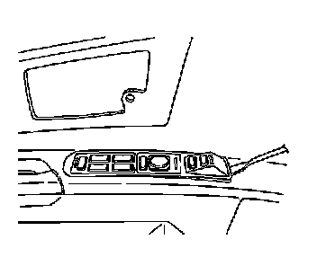
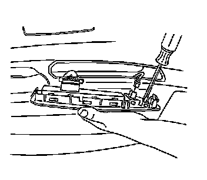
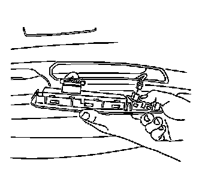
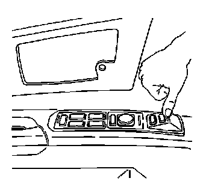

Removal and Replacement
Driver Seat Adjuster Memory Switch Replacement
Removal Procedure

1. Insert a flat-bladed tool under the front edge of the switch assembly to release the retainer from the door trim panel.
2. Disconnect the electrical connector from the switch.

3. Use a flat-bladed tool to disengage the locking tabs from both sides of the switch.
4. Remove the switch.
Installation Procedure

1. Snap the switch into the door switch bezel.
2. Connect the electrical connector.

3. Insert the rear of the switch assembly into the door trim panel.
4. Press down on the front of the switch assembly to engage the switch to the door trim panel.